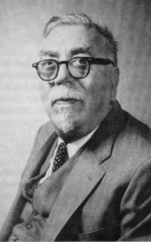

After graduating from Ayer High School in 1906 at 11 years of age, Wiener entered Tufts College. He was awarded a BA in mathematics in 1909 at the age of 14, whereupon he began graduate studies of zoology at Harvard. In 1910 he transferred to Cornell to study philosophy.

